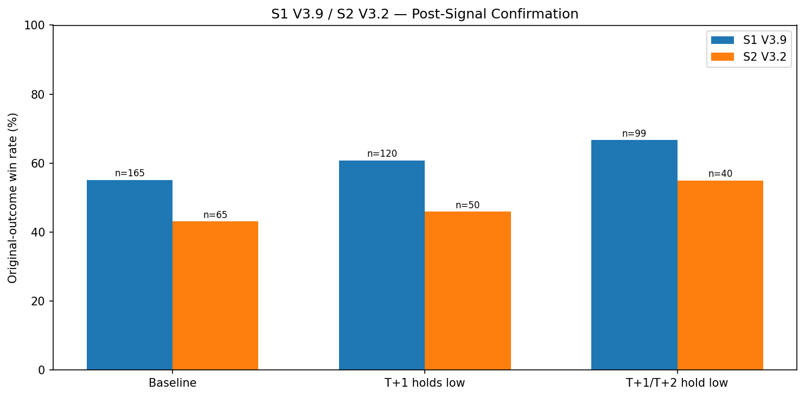

RS-XAUUSD-20260815-001 · XAUUSD · 2026-08-15
S1 V3.9 / S2 V3.2 — post-signal 1–2 bar confirmation
S1 V3.9 或 S2 V3.2 出訊號之後，先不要立刻進場，改成等下一根、或下兩根 30 分鐘 K 棒收完；只要這段等待期間跌破訊號 K 棒的最低點就放棄這筆。這樣的「等確認」規則，能不能把賠錢的單子先篩掉？
Headline Metrics 關鍵數字
Key Findings 重點發現
S1 的一根 K 棒確認，是這份研究唯一撐過驗證的訊號
在能對應到 30 分鐘歷史的 165 筆 S1 交易中，等 T+1 收完且守住訊號 K 低點，原始勝率從 55.15% 升到 60.83%（n=120）。更重要的是它在最新 30% 的資料上仍然成立：勝率從 48.0% 升到 57.14%（n=35），過程中濾掉 11 筆虧損、只誤殺 4 筆獲利。
等第二根 K 棒在近期資料上反而變差
全樣本看 T+1/T+2 都守住低點可以到 66.67%（n=99），是最漂亮的數字；但在最新 30% 的驗證區只剩 54.84%（n=31），低於只等一根的 57.14%。多等一根換來的是更少的樣本和更差的近期表現，這份篩選證據不足以支持把它當成實盤規則。
S2 在近期驗證區完全沒有通過
全樣本 S2 從 43.08% 一路升到 46.0%（等一根）與 55.0%（等兩根），看起來和 S1 同向。但最新一段只有 20 筆：基準勝率本身就掉到 20.0%，等一根之後仍是 20.0%（毫無改善），等兩根反而降到 15.38%。S2 的結果必須視為不穩定。
這是「篩選關聯」，不是延後進場的實際損益
被留下的交易仍然沿用 TradingView 原本的進出場與損益，因此這裡量到的是「哪些單子事後看比較好」，而不是真的延後進場會賺多少。真正的 T+2/T+3 進場勝率、獲利因子與停損停利行為需要重跑 Pine；而且只有 36.67% 的 S1 與 41.4% 的 S2 交易落在這段 30 分鐘資料內。
Full Sample Rule Ladder 全樣本確認規則階梯
兩個策略在全樣本上都隨著等待變長而勝率上升，但同時留下的交易也越來越少——S1 等一根保留 72.73%、等兩根只剩 60.0%。下表列出 S1 五條規則的完整階梯，包含圖上沒有的兩條更嚴格版本。

S1 V3.9 — Five Confirmation Rules 五條確認規則（全樣本 165 筆）
| baseline | 165 | 55.15 | 1.921 | 100 | 0 | 0 | 0 |
|---|---|---|---|---|---|---|---|
| t1 hold signal low | 120 | 60.83 | 2.347 | 72.73 | 27 | 18 | 5.68 |
| t1 t2 hold signal low | 99 | 66.67 | 3.054 | 60 | 41 | 25 | 11.52 |
| t1 hold low and close | 83 | 68.67 | 3.485 | 50.3 | 48 | 34 | 13.52 |
| t1 t2 hold low and close | 74 | 75.68 | 5.029 | 44.85 | 56 | 35 | 20.53 |
S2 V3.2 — Five Confirmation Rules 五條確認規則（全樣本 65 筆）
S2 的全樣本階梯方向與 S1 一致，但每一格的樣本都更小——最嚴格的規則只剩 26 筆，已經不足以支撐任何結論。
| baseline | 65 | 43.08 | 1.823 | 100 | 0 | 0 | 0 |
|---|---|---|---|---|---|---|---|
| t1 hold signal low | 50 | 46 | 2.118 | 76.92 | 10 | 5 | 2.92 |
| t1 t2 hold signal low | 40 | 55 | 2.916 | 61.54 | 19 | 6 | 11.92 |
| t1 hold low and close | 29 | 51.72 | 2.482 | 44.62 | 23 | 13 | 8.64 |
| t1 t2 hold low and close | 26 | 69.23 | 5.07 | 40 | 29 | 10 | 26.15 |
S1 V3.9 — Chronological Holdout 最新 30% 時序驗證區（2026-04-13 至 2026-07-10）
這段期間 S1 的基準勝率是 48.0%（n=50）。等一根 K 棒把它拉到 57.14%（+9.14pp），是全篇唯一通過驗證的規則；等兩根只有 54.84%，反而比等一根差。
| t1 hold signal low | 35 | 57.14 | 9.14 | 70 | 11 | 4 |
|---|---|---|---|---|---|---|
| t1 t2 hold signal low | 31 | 54.84 | 6.84 | 62 | 12 | 7 |
S2 V3.2 — Chronological Holdout 最新 30% 時序驗證區（2026-03-25 至 2026-07-07）
這段期間 S2 的基準勝率只有 20.0%（n=20），而前段是 53.33%。等一根之後仍是 20.0%（+0.00pp），等兩根降到 15.38%（−4.62pp）。樣本太小且環境本身極端，只能判定為未通過驗證。
| t1 hold signal low | 15 | 20 | 0 | 75 | 4 | 1 |
|---|---|---|---|---|---|---|
| t1 t2 hold signal low | 13 | 15.38 | -4.62 | 65 | 5 | 2 |
Cost of Waiting 等待的代價：S1 等一根 K 棒的進場價變化（%，正數代表買得更貴）
| n | 152 |
|---|---|
| mean % | 0.0515 |
| median % | 0.0478 |
| p10 % | -0.1464 |
| p90 % | 0.2196 |
詮釋與實務意義
把這份研究讀成「等久一點勝率就更高」是錯的。全樣本的階梯確實是單調上升的——S1 從 55.15% 到 60.83% 到 66.67%，而且圖上沒有畫出的兩條更嚴格規則甚至到 68.67% 與 75.68%——但越漂亮的數字留下的樣本越少，最好看的那條只留下 44.85% 的交易，而且它根本沒有被時序驗證檢查過。真正被獨立驗證區支持的只有一條：S1 等一根 K 棒。 S2 的失敗要特別小心解讀。它的驗證區基準勝率只有 20.0%（n=20），而同一策略在前段是 53.33%。也就是說，這 20 筆本身就處在對 S2 極不友善的環境；在這種樣本上，「規則沒有用」和「這段期間整個策略都不行」無法分辨。結論只能是「未通過驗證」，不能升級成「已證實無效」。 還有一個勝率表看不到的成本：等待會改變進場價。S1 等一根 K 棒，進場價中位數比原本高 0.0478%，第 90 百分位高到 0.2196%；等兩根的第 90 百分位更達 0.3446%。對做多來說這是實實在在的變貴。篩選表把這筆成本完全記為零，所以即使勝率提升是真的，淨效果仍要等 Pine 重跑才能定案。
限制與注意事項
- 30 分鐘歷史從 2025-09-17 才開始，只有落在區間內的交易能被比對；S1 覆蓋率 36.67%、S2 覆蓋率 41.4%，多數交易不在樣本內。
- 交易匯出檔只有真正成交的單，被策略過濾掉或因持倉中而未觸發的訊號並不存在，因此無法評估「等待期間錯過的訊號」。
- 被選中的組別保留原始 TradingView 進出場與損益。延後進場的真實勝率／獲利因子必須重跑 Pine 才能得到。
- 同時比較五條規則會放大挑到假訊號的機率；本研究為描述性觀察，不構成調參授權。
- S2 驗證區僅 20 筆，等於方法設定的最小可解讀樣本門檻，其基準勝率（20.0%）本身即為極端值。